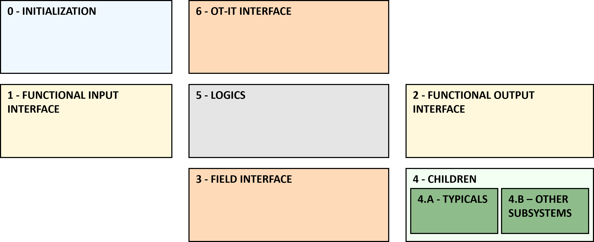

Every sub-system CAT is suggested to have the same internal software architecture, divided into six functional areas.
Each area is identified inside EcoStruxure Automation Expert by colored and named frames, according to the template shown here below:
Frame - 0 INITIALIZATION: Each sub-system has its own internal and autonomous initialization. This allows for a correct SubApp implementation and optionally establishes a hierarchical initialization priority. The initialization CAT is instanced inside this frame.
Frame - 1/2 FUNCTIONAL INPUT/OUTPUT: These two frames contain the software connections to the input and output adapters of the sub-systems, defined in its CAT interface. There is in those two frames one connection per function behavior of the sub-system.
Frame - 3 FIELD INTERFACE: This frame contains the CAT hosting all I/Os from the field directly contained inside the sub-system.
Frame - 4 CHILDREN: This frame is where all children belonging to this sub-system are located. This frame can be divided into two sub-frames:
4.A - TYPICALS: This frame contains the children with typical types as pumps, valves, motors and so on.
4.B - OTHER SUB-SYSTEMS: This frame contains generic sub-systems.
Frame - 5 LOGIC: This frame hosts the CAT implementing the whole functional logics of the sub-system. It governs messages from and to all other frames.
This frame is divided into three function areas, one per logic type:
5.A - Functional Behaviors: A single CAT to practically implement the intelligence of the sub-system.
5.B - Operation Mode Management: The sub-system logics managing the working modes of the sub-system in relationship to its parent or children, e.g. manual mode and automatic mode.
5.C - Interlocks and Permissive Management: The point of arrive and the distribution of the interlocks and permissive acting on the sub-system or its children.
Frame - 6 OT-IT INTERFACE: Very similarly to what the field interface does (frame 3), it contains the CAT implementing the exchange of signals to and from the IT/OT domain that resides outside of the scope of the IEC61499 communication network.
This bidirectional access contains the implementation of the specific communication mechanisms used to establish the connection. For instance, it could contain a MQTT client to publish certain topics towards the IT and to subscribe to other topics coming from the IT (e.g. HTTP Requests, WebSocket Client and so on).
